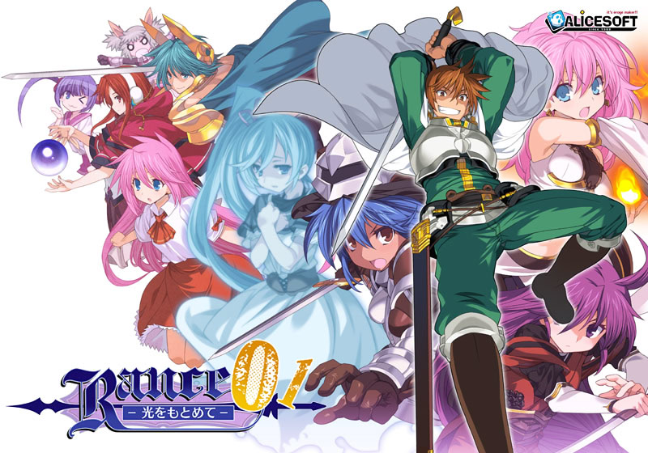

Um remake de Rance: Hikari o Motomete de 1989, com história, gráficos e som atualizados, além de um novo sistema de batalha.
A mente do brutal guerreiro Rance está cheia de pensamentos sobre garotas. E por onde quer que ele passe, gritos de mulheres bonitas certamente serão ouvidos.
Ele tem viajado aleatoriamente com a maga que comprou recentemente, Sill, mas agora ele tem um propósito diferente. Seu alvo desta vez — ou melhor, seu destino — é o Reino de Leazas, uma nação conhecida por ser a mais rica do mundo.
Hikari, filha de uma família nobre que frequentava a Academia de Paris local, desapareceu, e Rance aceitou a missão de encontrá-la.
Rance parte para aproveitar as belezas de Leazas!
...E enquanto estiver lá, ele encontrará Hikari e a aproveitará também, é claro.
